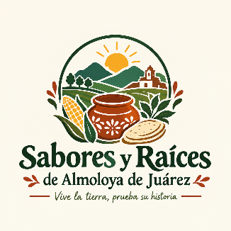
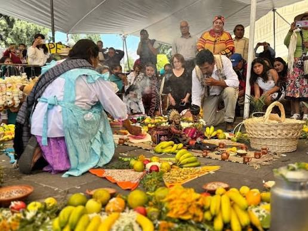
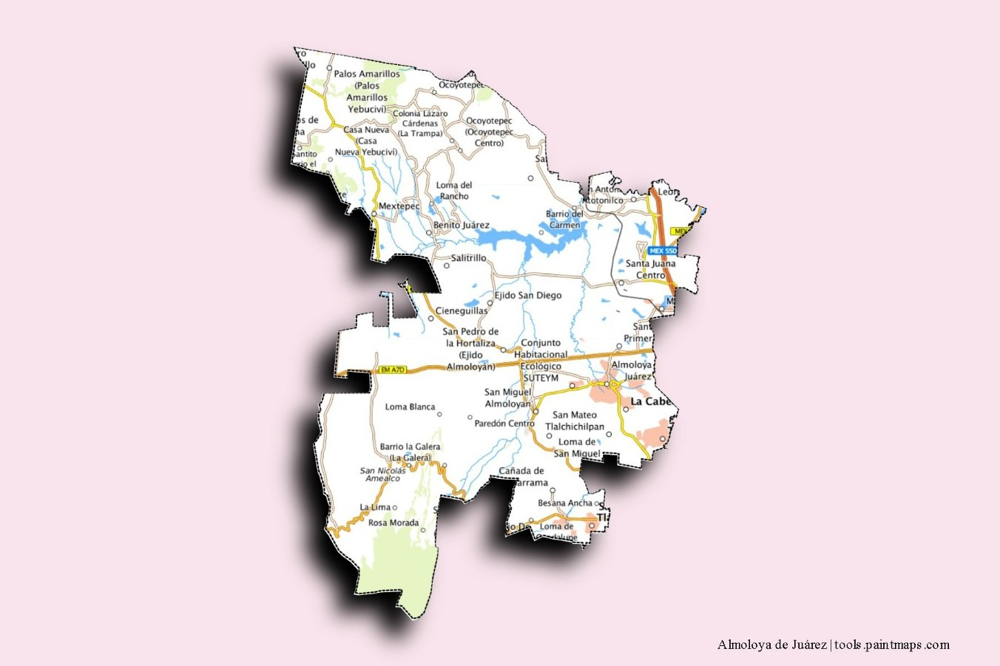
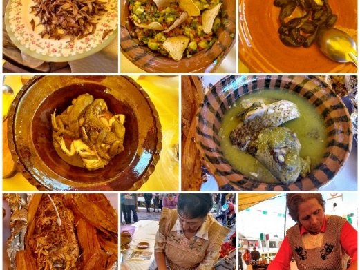
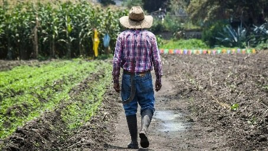
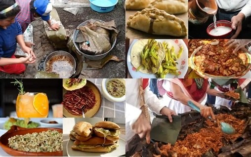
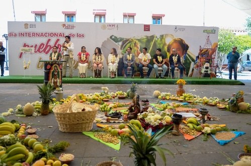
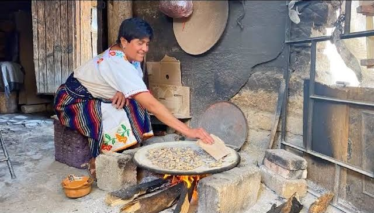
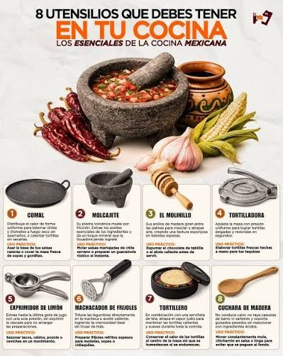

Agricultura y producción local
Conocimiento de las actividades agrícolas y de los productos que se obtienen en las comunidades.
Descubre los sabores, tradiciones y formas de vida de las comunidades de Almoloya de Juárez a través de una experiencia de turismo rural, gastronómico y cultural.
Conoce la ruta
Sabores y Raíces de Almoloya de Juárez es una propuesta de turismo rural, gastronómico y cultural que busca acercar a los visitantes a las comunidades del municipio mediante experiencias participativas relacionadas con la gastronomía local, las actividades rurales, las tradiciones y los conocimientos comunitarios.
La ruta busca que el visitante no sea únicamente un observador, sino que pueda participar, aprender, degustar y convivir con la comunidad, conociendo el origen de los productos y las prácticas que forman parte de la vida cotidiana de la población.
A través de estas experiencias se busca generar un acercamiento entre visitantes y habitantes, al mismo tiempo que se da valor a los productos, conocimientos y tradiciones locales.

¿Qué encontrarás en Sabores y Raíces? La ruta integra diferentes elementos que permiten conocer Almoloya de Juárez desde una perspectiva rural, gastronómica y cultural.
Conocimiento de las actividades agrícolas y de los productos que se obtienen en las comunidades.
Degustación y conocimiento de alimentos y preparaciones tradicionales de la región.
Participación en actividades relacionadas con el campo y la producción local, de acuerdo con la temporada.
Acercamiento a las expresiones culturales y formas de vida de las comunidades.
Interacción con habitantes, productores y personas que conservan los conocimientos locales.
Conocer el proceso que existe detrás de los alimentos: desde su producción y preparación hasta su consumo.
Las comunidades de la ruta se encuentran en el municipio de Almoloya de Juárez, Estado de México.


Conoce y degusta alimentos tradicionales de las comunidades de Almoloya de Juárez, mientras descubres los ingredientes, conocimientos y formas de preparación que forman parte de la gastronomía local.

Conoce el proceso de producción de los alimentos mediante actividades relacionadas con la agricultura y la vida rural, comprendiendo cómo los productos pasan del campo a la preparación de los alimentos.
Comparte con habitantes de las comunidades y conoce sus formas de vida, conocimientos y actividades cotidianas.

Conoce productos elaborados por productores de la comunidad y descubre el trabajo que existe detrás de cada uno de ellos.

Acércate a las costumbres, conocimientos, historias y expresiones culturales que forman parte de la identidad de las comunidades participantes.
Los sabores también cuentan historias.

